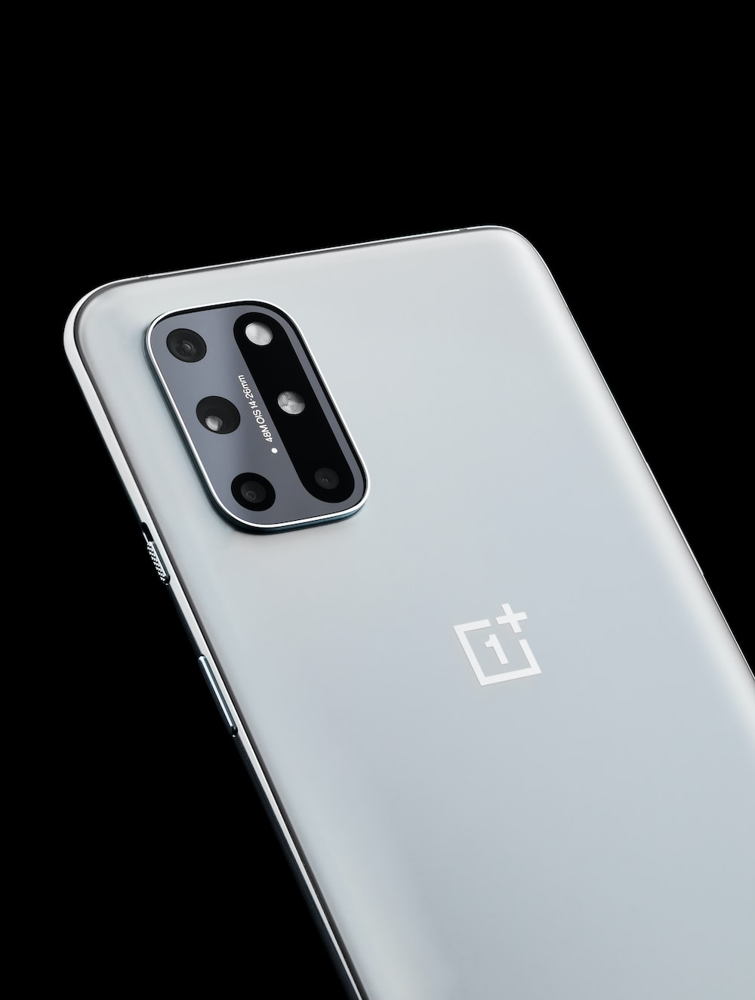

Oneplus

OnePlus Technology (Shenzhen) Co., Ltd. (Chinese: 一加科技; pinyin: Yījiā Kējì), doing business as OnePlus, is a premium Chinese consumer electronics manufacturer headquartered in Shenzhen, Guangdong.[6] It is a subsidiary of Oppo.
OnePlus was founded by Pete Lau and Carl Pei on 16 December 2013 to develop a high-end flagship smartphone running Cyanogen OS that would come to be known as the OnePlus One.
OnePlus would continue to release phones throughout the 2010s and 2020s.
In 2020, OnePlus released the OnePlus Nord, its first mid-range smartphone since the OnePlus X in 2015. Pei would oversee the design and marketing of OnePlus' products until his departure from the company in October 2020, going on to found the consumer electronics manufacturer Nothing. In 2022–2023, OnePlus is still actively producing affordably priced phones ($200–749 USD) with top-of-the-line specs comparable to leading Samsung phones, including 5G connectivity. OnePlus is also partnered with T-Mobile to provide OnePlus Phone through T-Mobile to extend its legitimacy and reach.